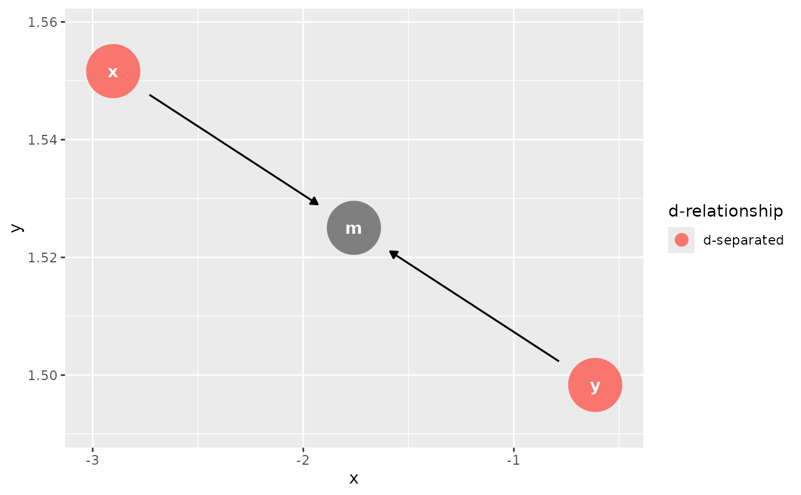
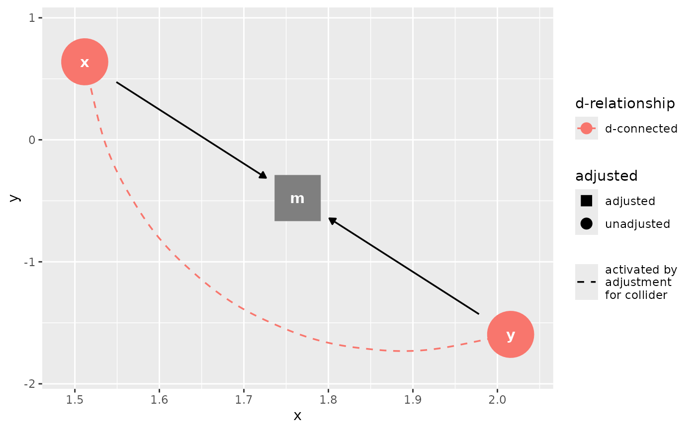
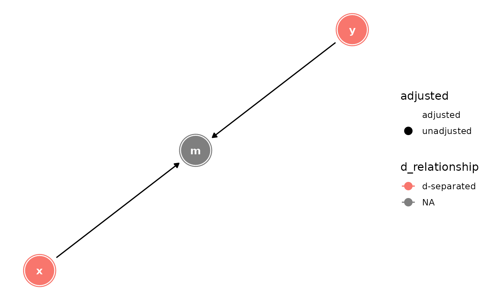
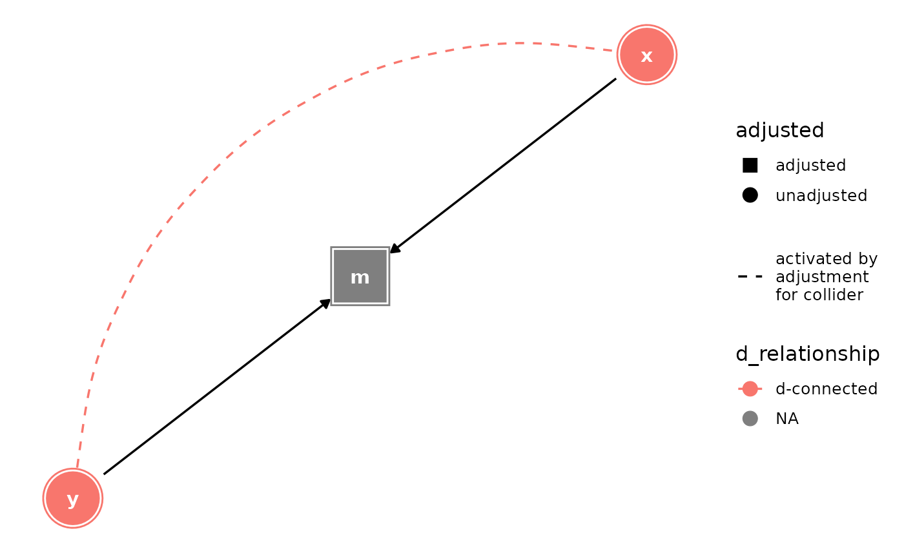
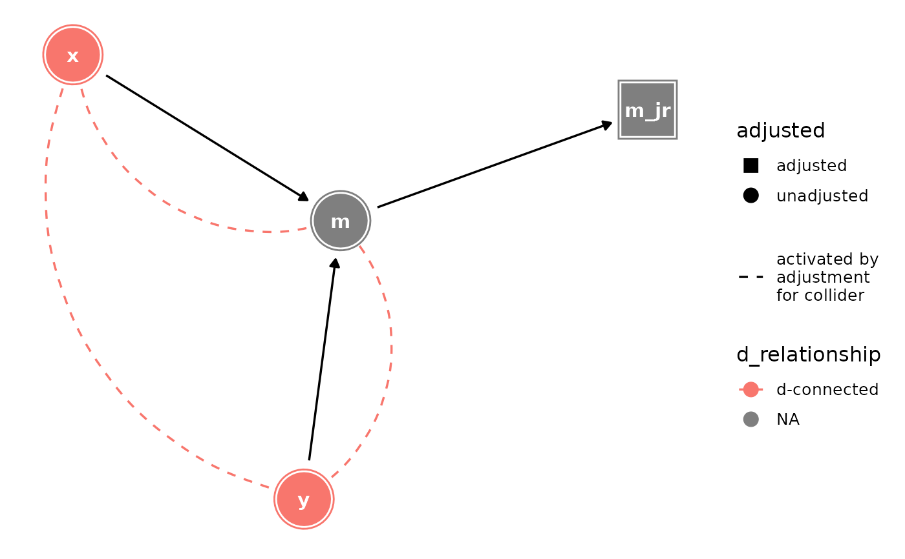

D-separation is a key concept in causal structural models. Variables are
d-separated if there are no open paths between them. The node_d*()
functions label variables as d-connected or d-separated. The
ggdag_d*() functions plot the results. The *_dconnected(),
*_dseparated(), and *_drelationship() functions essentially
produce the same output and are just different ways of thinking about the
relationship. See dagitty::dseparated() for details.
Usage
node_dconnected(
.tdy_dag,
from = NULL,
to = NULL,
controlling_for = NULL,
as_factor = TRUE,
...
)
node_dseparated(
.tdy_dag,
from = NULL,
to = NULL,
controlling_for = NULL,
as_factor = TRUE
)
node_drelationship(
.tdy_dag,
from = NULL,
to = NULL,
controlling_for = NULL,
as_factor = TRUE
)
ggdag_drelationship(
.tdy_dag,
from = NULL,
to = NULL,
controlling_for = NULL,
...,
edge_type = "link_arc",
node_size = 16,
text_size = 3.88,
label_size = text_size,
text_col = "white",
label_col = text_col,
node = TRUE,
stylized = FALSE,
text = TRUE,
use_labels = NULL,
collider_lines = TRUE
)
ggdag_dseparated(
.tdy_dag,
from = NULL,
to = NULL,
controlling_for = NULL,
...,
edge_type = "link_arc",
node_size = 16,
text_size = 3.88,
label_size = text_size,
text_col = "white",
label_col = text_col,
node = TRUE,
stylized = FALSE,
text = TRUE,
use_labels = NULL,
collider_lines = TRUE
)
ggdag_dconnected(
.tdy_dag,
from = NULL,
to = NULL,
controlling_for = NULL,
...,
edge_type = "link_arc",
node_size = 16,
text_size = 3.88,
label_size = text_size,
text_col = "white",
label_col = text_col,
node = TRUE,
stylized = FALSE,
text = TRUE,
use_labels = NULL,
collider_lines = TRUE
)Arguments
- .tdy_dag
input graph, an object of class
tidy_dagittyordagitty- from
a character vector, the starting variable (must by in DAG). If
NULL, checks DAG for exposure variable.- to
a character vector, the ending variable (must by in DAG). If
NULL, checks DAG for outcome variable.- controlling_for
a character vector, variables in the DAG to control for.
- as_factor
logical. Should the
d_relationshipvariable be a factor?- ...
additional arguments passed to
tidy_dagitty()- edge_type
a character vector, the edge geom to use. One of: "link_arc", which accounts for directed and bidirected edges, "link", "arc", or "diagonal"
- node_size
size of DAG node
- text_size
size of DAG text
- label_size
size of label text
- text_col
color of DAG text
- label_col
color of label text
- node
logical. Should nodes be included in the DAG?
- stylized
logical. Should DAG nodes be stylized? If so, use
geom_dag_nodesand if not usegeom_dag_point- text
logical. Should text be included in the DAG?
- use_labels
a string. Variable to use for
geom_dag_label_repel(). Default isNULL.- collider_lines
logical. Should the plot show paths activated by adjusting for a collider?
Examples
library(ggplot2)
dag <- dagify(m ~ x + y)
dag %>% ggdag_drelationship("x", "y")

dag %>% ggdag_drelationship("x", "y", controlling_for = "m")

dag %>%
node_dseparated("x", "y") %>%
ggplot(aes(x = x, y = y, xend = xend, yend = yend, shape = adjusted, col = d_relationship)) +
geom_dag_edges() +
geom_dag_collider_edges() +
geom_dag_node() +
geom_dag_text(col = "white") +
theme_dag() +
scale_adjusted()

dag %>%
node_dconnected("x", "y", controlling_for = "m") %>%
ggplot(aes(x = x, y = y, xend = xend, yend = yend, shape = adjusted, col = d_relationship)) +
geom_dag_edges() +
geom_dag_collider_edges() +
geom_dag_node() +
geom_dag_text(col = "white") +
theme_dag() +
scale_adjusted()

dagify(m ~ x + y, m_jr ~ m) %>%
tidy_dagitty(layout = "nicely") %>%
node_dconnected("x", "y", controlling_for = "m_jr") %>%
ggplot(aes(x = x, y = y, xend = xend, yend = yend, shape = adjusted, col = d_relationship)) +
geom_dag_edges() +
geom_dag_collider_edges() +
geom_dag_node() +
geom_dag_text(col = "white") +
theme_dag() +
scale_adjusted()
